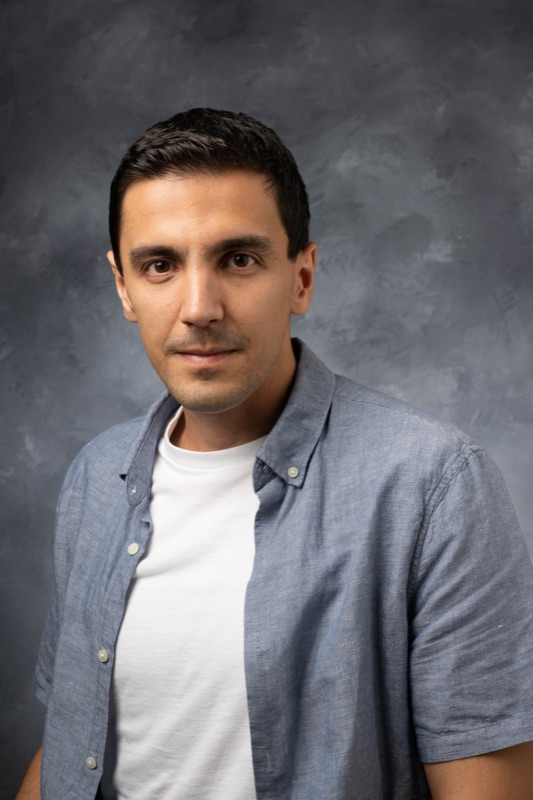
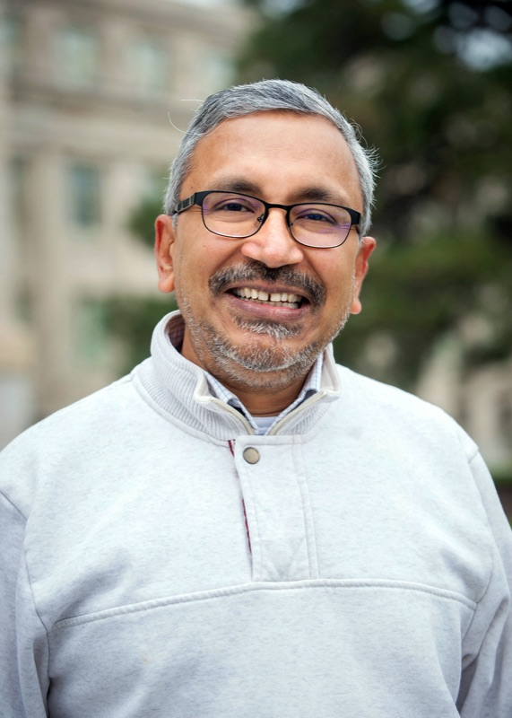
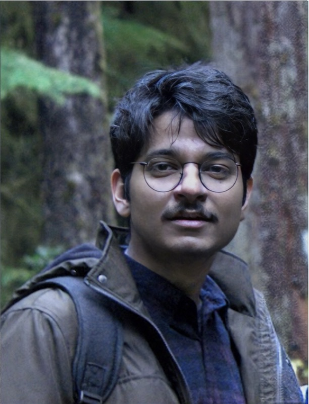
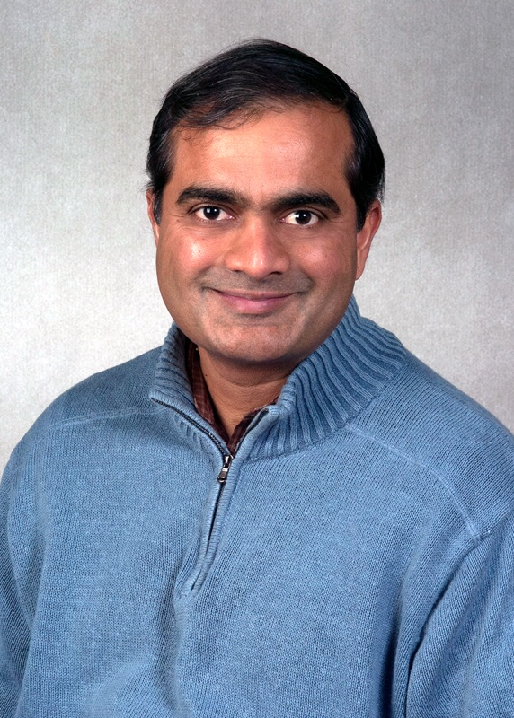
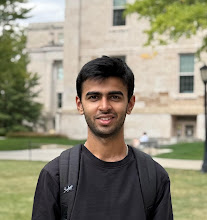
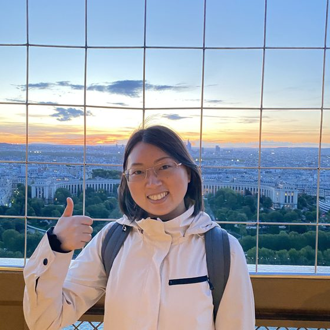
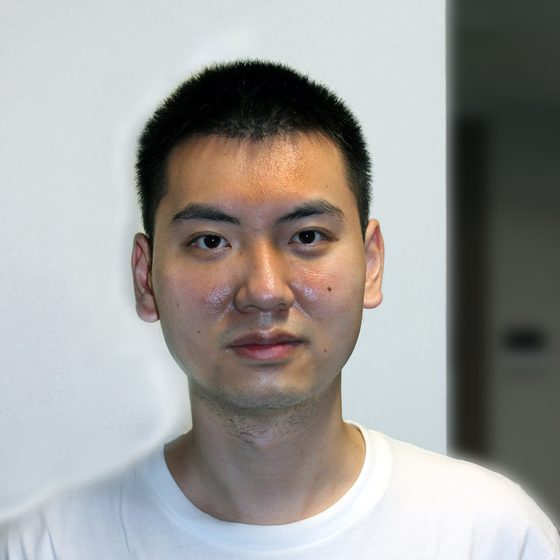

Mehrdad Moharrami
Reinforcement learning, Markov decision processes, and random graphs
Listed alphabetically by last name.

Reinforcement learning, Markov decision processes, and random graphs

Distributed graph algorithms, randomized algorithms, and computational epidemiology

Pseudorandomness, coding theory, and cryptography

Computational geometry, combinatorial optimization, and algorithmic game theory
Listed alphabetically by last name.

Advisor: Sourya Roy
Property testing, online algorithms, imitation learning

Advisor: Sriram Pemmaraju
Distributed systems, distributed graph algorithms
Advisor: Sriram Pemmaraju
Approximation algorithms, computational epidemiology
Advisor: Mehrdad Moharrami
Reinforcement learning, preference learning, multi-agent systems

Advisor: Kasturi Varadarajan
Computational geometry, relational algorithms, subspace approximation
Advisor: Mehrdad Moharrami
Deep learning, biomedical signal analysis
Advisor: Sriram Pemmaraju
Distributed algorithms, sampling and counting
Former students are listed by graduation year, with their advisor and an optional destination or current role.
→ Applied Scientist · Amazon
→ Postdoctoral fellow · Aalto University → Assistant Professor · IIT Madras
→ Postdoctoral researcher · University of Bergen → Assistant Professor · IIT Jodhpur
→ Postdoctoral researcher · University of Bergen → Assistant Professor · Portland State University
→ Software Engineer · Yelp
→ Senior Software Engineer · Apple Maps
→ Software Engineer · Google
→ Software Engineer · Google
→ Postdoctoral Scholar · CIGIDEN
→ Associate Professor · University of Northern Iowa
→ Senior Software Engineer · Google
→ Microsoft
→ Assistant Professor · University of Texas at San Antonio
→ Co-founder · Prelight
→ Professor of Instruction · University of Iowa
→ Software Engineer · NVIDIA
→ Professor Emeritus · St. Ambrose University
→ Associate Professor · IIIT Delhi
→ Professor · Villanova University
→ Professor and Head · IIT Kharagpur